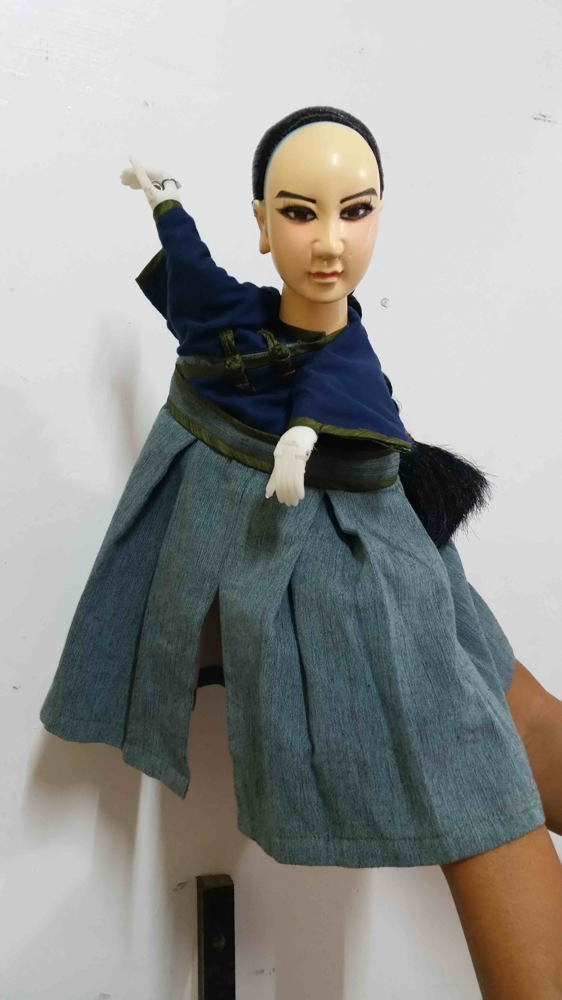

掌藝社掌中劇團
演出節目‧神.境
演出時間‧19：00-20：00(10/8)
掌藝社第一代團長何金宗先生，於西元1982年民國71年師承(寶五洲鄭壹雄先生之徒)新港五洲金臺園，洪金山先生為師。於西元1996年民國85年，創立何金宗掌中劇團。其後民國86年起極力栽培長子何佳煜(現任團長)操偶基礎、技巧、口白等等，民國93年正式擔任現場口白主演。
民國98年起開始支援各地有名傑出劇團演出，擔任操偶之職並觀摩學習，於西元2011年民國100年於嘉義縣文化局申請註冊立案創立何金宗掌中劇團子劇團(掌藝社)，現任第二代團長及主演。一位七年級生熱愛傳統文化，子承父業繼續秉持著傳承傳統戲曲 ，將台灣國寶文化發揚光大。不讓這項兼具忠、孝、節、義、仁義、禮、智、信的傳統戲劇藝術因此而沒落消失。並將掌中戲保存傳統加入創新變化，讓更多年輕一輩的青年人喜愛這項傳統，繼續將這項傳統戲劇，共同傳承愛護我們台灣國寶文化。
劇情概述
諸羅打貓純樸鄉下，一名孝順小孩何文杰，與父親相依為命，家境清寒、家徒四壁，父親阿順伯少年之時因工作過度導致年老身體衰弱。文杰一心欲望讓父親阿順伯過好日子，苦無良策於是前往打貓街上大士爺廟，祈求大士爺保佑。
文杰前往大士爺廟，求助大士爺，文杰一心想讓父親過好日子擺脫貧困，因此誤入歧途做下迫害鄉民、違背良心的事情。父親阿順伯得知文杰誤入歧途後，痛心疾首！欲喚回兒子文杰原本善良的心，讓文杰浪子回頭。另一方面的文杰內心之處，明白自己所作所為泯滅良心、違背天理，但因為想一夕致富孝順父親的想法讓文杰無法抽身離開，淪落黑暗之中，最後幸得大士爺的點化，讓文杰痛改前非、重新做人。父子倆恢復以往平凡的生活，享受天倫之樂。
小西園第四代掌中劇團
演出節目‧神偷大盜獨眼虎
演出時間‧20：00-21：00 (10/8)
小西園第四代掌中劇團成立於民國101年，邱文建團長師承於小西園掌中劇團，為小西園第四代弟子，近年更承接小西園掌中劇團在北部的廟會外台戲，在許王藝師的鞭策下，操偶技巧與口白藝術更為精進！並多次參與小西園掌中劇團國內外大小演出，如保生文化祭以及瑞典、新加坡等世界各地的演出，個人亦榮獲 2009年7-11盃青年主演大車拼優等、2010年青年主演大車拼優等殊榮。
劇情概述
魏國棟為保鑣結仇于德海，二人因此結怨，于德海因此滅了魏家庄。 魏國棟其二子天虎、天佑因次逃亡；逃亡之時被一位禪師收容於玉泉寺。因緣際會之下兄弟二人各自分道揚鑣天佑被打狗長者孫永富收為義子；天虎則逃出玉泉寺。十年後，天佑功名得第，巡行阿猴城追捕神偷大盜獨眼虎，最後得知大盜是失散多年的大哥天虎。得知天虎為了一家尋仇，而殺了于德海犯案在阿猴城。當官的天佑不忍心判刑自己親大哥；經過神捕展飛追緝下，神偷不忍讓弟弟為難，了斷神偷的一生。
明星園掌中劇團 演出節目‧泰山擋硃筆 演出時間‧19：00-20：00(10/9)
本團於西元1970年民國59年由洪貴淼先生正式成立，凡舉至今已過45年，本團雖師承五洲派，擁有五洲派精湛口白、五音、詩詞的基本功；更吸收【閣】派節奏順暢，【外江派】木偶細膩的操作的長處，本團持續的創新與研究，希望在掌中劇界永保不墜，這種觀念是我明星園掌中劇團永遠不變的傳承原則。
劇情概述
社會充滿了唯利是圖的思想，越來越缺乏共和共識的精神，即時在鄉下地方人情味也變得似真似假，為了增進和樂的氣氛，讓社會能多多關心身邊所發生的人、事、物，進而能有犧牲小我完成大我的思維，特以雲林西螺地區所流傳「泰山石敢當」的故事加以編撰，再參酌現代的觀感，來呈現過往真誠的人情味以及彼此合樂一氣的精神，希望此劇能順利展演已達編撰「泰山擋硃筆」此劇的目的。

真雲林閣掌中劇團
演出節目‧傲氣之珠 幽冥節度使
演出時間‧20：00-21：00 (10/9)
「真雲林閣掌中劇團」創立於民國64年，民國69年完成立案登記。創辦人李永保先生，年輕時代在其兄長李金樹先生之「大山雲林閣」學藝，學藝完成即獨立創立「真雲林閣掌中劇團」。
真雲林閣掌中劇團是雲林在地歷史悠久也是最具專業規模的掌中劇團。多年來在展演製作及戲劇教育推廣上的優異表現，深獲各界肯定；本劇團自創團以來追求除了「培育台灣布袋戲人才」外，更積極拓展「實驗跨界且具本土特色的戲劇展演」為目標，而作品風格更是在維持傳統的同時也不斷的積極創新，將台灣的布袋戲往更多面相發展。
平時劇團營運以參加廟會慶典、學校教學為主要收入來源。演出劇目以「峰劍春秋」、「烈女復國」、「怪俠雙流星」、「鐵漢南俠」等最為膾炙人口。本劇團並曾參加多次比賽，均有優異成績表現。
劇情概述
地府裡的十殿閻羅在長久的公事公辦中其實已經成為一個僵化體系，全無生氣和任何可能性，此讓對工作仍有憧憬的轉輪王不滿也不願，勇敢提出質疑更願前往人間找尋可能的改變契機……。
劉進卿和李靜姑這對有情有愛、真心相惜的年輕夫妻，竟在一場科舉失利和轉輪王失誤介入的誤會衝突下演變成陰陽兩隔的悲劇。
轉輪王深感兩人的情深未冺而費心巧排計謀，讓進卿奉皇命得入地府與妻當面釋疑續緣，更在一連串的驚滔駭浪過程中感動地藏王菩薩、說服其餘九個閻王，成就進卿靜姑再續良緣的可能性。
化身比翼鳥從地底竄出的進卿靜姑情深感動天地，而地府也在轉輪王一番折衝挑動之下，逐漸展現生氣和溫馨，十殿閻羅不再冰冷無情.....。最重要的是，原本被轉輪王視未改變地府必須卻又屢找不著的傲氣之珠，原來就在眾人自我心中，勇者自得！
臺北木偶劇團
演出節目‧南天門
演出時間‧19：00-20：00(10/10)
臺北木偶劇團成立於2010年由臺灣國寶級布袋戲大師李天祿先生啟蒙，師事陳錫煌、李傳燦二位老師，以保存傳統偶戲表演藝術，提昇偶戲表演素質，創造臺灣偶戲國際舞台為創立宗旨。
臺北木偶劇團演職員以中生代為主，平均習藝年齡達15年以上，以延續傳統布袋戲為職志，是臺灣具活力的新生代木偶劇團之一。
臺北木偶劇團以承襲傳統藝術、創造精緻藝術之精神，持續尋找傳統、發掘傳統，發揮過去習藝時所累積的豐富經驗，以認真、用心的製作方針，在不拘泥於傳統木偶劇之創作形式下，以多元及多變的木偶劇場藝術特色，創作出更細膩、精緻的表演方式，吸引更多觀眾走進劇場感受不同以往的布袋戲饗宴。
劇情概述
明熹宗時宦官魏忠賢專權，陷害正直史部尚書曹正邦，先解他的職位後派手下蘇羽埋伏路上將全家殺害，僅小姐曹玉蓮及老僕曹福逃脫，在投奔親戚李倫的路上遇到重重困難，在忠心的老僕陪伴下得以安全抵達，而老僕曹福最後雖凍死廣華山，但瑤池金母念其忠心封他為土地神。

金宇園掌中劇團
演出節目‧戲藝人生
演出時間‧20：00-21：00 (10/10)
劇團創立者趙金統，自小與父親在全省廟會中表演傳統布袋戲；風靡當時的電視布袋戲，令年幼的趙金統神往不已，從此下定決心，要好好學習這項傳統文化，並將其流播和傳承。15歲時，廟會盛行大型布袋戲演出，演出結合乾冰、彩色燈光、火花等特殊效果，加上自製怪獸，場面熱鬧非凡！因此台下總是人山人海，這讓趙金統想追求布袋戲更高超的技術。
後來，趙金統因緣際會進入了布袋戲攝影棚「天宇布袋戲」；並於2008年時，創立了「金宇園掌中劇團」，將電視電腦動畫特技運用到外台戲之外，還結合現代燈光雷射音響科技效果，再把四川變臉、空中木偶飛簷走壁等特效、電視爆破科技及改裝加大木偶人型演出等技術融入操偶表演；另設立「聖章影視有限公司」，進軍影像市場，並鑑於現今娛樂邁向多元化，更大膽將版圖跨足於流行音樂界，與「無非文化有限公司」合作，協助拍攝台語歌手黃妃歌曲「風蕭蕭」MV等製作，以及與大甲鎮瀾宮合作拍攝其主題曲MV（由歌手彭莉演唱）等，企圖利用更多渠道，讓台灣布袋戲的精緻藝術被更多人看見。雖然面臨現實環境的考驗，但仍堅持發揚台灣布袋戲文化傳承；未來更計劃要拍攝三十六孝布袋戲影片，傳揚「百善孝為先」的道理。讓布袋戲不僅只是娛樂，更是一種能代代相傳、宣揚「忠、孝、節、義」與台灣文化的傳承技藝。
劇情概述
民國40年代，以務農為主，娛樂很少。一個鄉下年輕人阿肥，家貧沒錢讀書，只好跟著布袋戲賣藥團，四處表演賣藥討生活。有一天，遇見歌仔戲班的阿戀，二人熱戀結婚，努力賺錢、教養小孩。期間經歷八七水災，所幸平安度過。然而時代變遷，電視機進入家庭，阿肥生意越來越差，阿肥父子只好開始接演廟口戲。70年代，歌舞團與電影加入競爭行列，阿肥腦筋動得快，改作電影布袋戲，卻小兒子金統因熱衷電視布袋戲而與父親爭執，幸好姐姐秀娟從中斡旋，金統順利出外學手藝，更認識一生的牽手玉卿。後來，阿肥日漸老邁，金統回鄉接下阿肥衣缽，奉養長輩，更將在外所學之技術運用於布袋戲上。看見現在，回首過去，阿肥見證了布袋戲的種種變遷，覺得這一輩子值得了。
昇平五洲園
演出節目‧姜子牙下山
演出時間‧19：00-20：00(10/11)
昇平五洲園正式成立於西元1967年，團長林宗男師承黃海岱
大師的五洲園派，取名昇平五洲園，亦即象徵「四海昇平，五洲揚
名」，目前已傳承至第二代林政興。
本劇團以傳統與創新多元兼併為宗旨，推展布袋戲、落實文化
與技藝傳承，並藉由創新演出及教學活動傳導民間戲曲藝術，促進
布袋戲文化之提升與傳續。
劇情概述
商朝紂王無道，寵愛蘇妲己，其行徑惹得天怒人怨，逼得諸侯群起造反，最終斷送商朝江山。
姜子牙是一位七十二歲的老叟，在崑崙山拜師學藝四十年，其師元始天尊一句「天數既定」，便叫他下山去。姜子牙下山造訪結拜大哥宋異人，宋異人從中牽線，幫姜子牙娶了一位六十八歲的悍婦馬氏。新婚的姜子牙被馬氏逼迫去做生意，但諸事不順，任何生意都血本無歸，回家還得面對河東獅吼的馬氏，所幸宋異人一直從旁支持他。
因緣際會下，宋異人得知姜子牙在崑崙山修道且長期接觸命理，便幫助他開設命相館，準確率之高，一時門庭若市，名聲遠近馳名，更收拾了琵琶精，為民除害，豈料卻埋下日後的殺機，原來蘇妲己是狐狸精化身而成，琵琶精正是其姊妹。
最後姜子牙堅守本分，秉持君子有所為，有所不為的情操，幫助周文王推翻商紂政權，輔佐周文王開國，使周朝稱霸天下八百餘年。

劇情概述
赤崁樓，臺南府城最著名的古蹟，庭院中九隻背著石碑的『贔屭』(形似烏龜，是長壽和吉祥的象徵，喜好背重物)，訴說著一段傳奇故事。可歌可泣的革命精神，就此揭開序幕…
諸羅添弟會與雷公會相互械鬥，官府追捕甚急，天地會因受牽連，紛紛逃入大里杙，官吏查辦過激，又藉端勒索，焚燬民舍，人心不服，糾集會黨，抗官拒捕，林爽文率眾起義，豎旗抗清。
貪汙腐敗的官吏很多，官府力量薄弱，治安甚壞，百姓生活不穩，廣大人民眼見貪官明目張膽洗劫，發動捉捕天地會黨人，並率兵駐營大墩(大里杙之鄰村，今之台中市)，肆意捕獲無辜百姓，並放火焚燒民房。因為這樣的貪官橫行，於是臺灣天地會首領林爽文號召十萬民兵反清起義，保家衛國、捍衛故土的情操精神，順天軍奮不顧身地守護家園嶄露無遺。其組織在臺灣迅速擴大，人數不斷增加，許多困苦及不滿現實的民眾亦紛紛入會。
五隆園掌中劇團
演出節目‧義膽豪傑天地會-平海大將軍
演出時間‧20：00-21：00 (10/11)
劇團沿革、成立時間民國69年7月9號
五隆園掌中劇團有四十年歷史之久，為雲林在地老字號布袋戲劇團，目前由第二代團長李紂賢先生掌門，除了傳承布袋戲既有技巧，台南新秀編劇/林慶翔也頻頻創新劇本，嘗試各式演出手法，並且巧妙運用科技強化舞台效果，讓傳統藝術更具生命力與張力，讓布袋戲不在只是布袋戲了。
本團於民國六十七年由李慶隆先生正式註冊創立，師承「五洲園」黃海岱大師、「隆興閣」廖來興大師並在學藝成功後，創團由黃海岱大師為劇團取名為「五隆園」掌中劇團，以五（洲園）、隆（興閣）合為團名，以表師承之意，也希望結合二派特色，演出五隆園自有的特色。民國87年交接給第二代團主李紂賢先生領導五隆園掌中劇團，繼續傳承本土文化，李紂賢從小生長於偶戲之都『雲林』，由於從小跟隨劇團耳濡目染，伴隨半工半讀直至完成學業，在民國七十九年正式入團，從打雜、燈光、電光爆破、操偶、照型、配樂一路到主演，民國九十三年入選雲林縣優秀青年，二十六歲當選台灣地方戲劇協進會理事為布袋戲發聲，是最年輕的一位也獨創自己特有
演出的風格讓野台戲內容更精緻更生動，利用電視的運鏡與後製特效、音效和電腦燈光配合巧妙，劇情高潮迭起，受邀廟宇演出有口皆碑，觀眾更是掌聲熱烈意猶未盡，聚集到廟宇前爭睹節目現場演出，締造初盛況空前的紀錄演出連戲數月，奠定五隆園掌中劇團第一代薪火傳承，奠定第二代團長野台地位依舊屹立不搖。國際流氓英雄傳走紅一時，繼而走紅成為家喻戶曉的人物，團長李紂賢先生深切了解「創新」對布袋戲的迫切重要，永續發展策略意簡易賅的說就是眼光視野放遠，讓台灣偶戲與國際接軌，唯有改革設計創新，才能開發搏得更多演出機會，光榮走出台灣，耀眼國際舞台，計劃願景得以實現，不求個人以傳承創新為旨是老團長李慶隆先生所定、李紂賢先生秉持著這個理念帶領五隆園掌中劇團團隊再上一層樓。
雲林五洲小桃源掌中劇團
演出節目‧鳳山虎傳奇
演出時間‧19：00-20：00(10/12)
團長陳文哲為五洲園第五代弟子，新港寶五洲系統鄭一雄系統，拜師五洲小桃源孫正明大師的弟子孫慶年、邱永村。
團長陳文哲延續了孫正明大師所鑽研創演【金光布袋戲：聖俠風雲】的演出手法及唸白特色，不只在大型公演以【現場唸白】的方式演出，在廟口酬神也以【現場唸白】為主要演出方式。近幾年團長陳文哲更積極投入校園布袋戲傳承，以活潑、灰階、逗趣的教學方式來引導學生正確的學習觀念。以現代時事創新劇本來傳習教學演出，遏止校園暴力，反映社會亂象，端正校園、社會風氣。
劇情概述
清朝末年，台灣鳳山坑出一英雄，名叫尤守己，好打抱不平，人稱鳳山虎，一日，諸羅山適逢水災，鳳山坑善人周寒山捐出一半家產拯救災民，不料，養子周文聰勾結日本人，心有不甘，竟將養父母害死，又加害阿牛，讓奶母也就是文聰的親生母親朱鳳仙替他擔罪，幸好，尤守己機智，識破周文聰的奸計，將計就計，將他繩之以法。

台中聲五洲掌中劇團
演出節目‧廖添丁英雄終章-雙艷刧
演出時間‧20：00-21：00 (10/12)
聲揚世界五大洲 - 台中聲五洲掌中劇團
五十二年前，響噹噹三個聖筊，決定了「聲五洲掌中劇團」團名（以下簡稱聲五洲）。聲五洲由現任團長王英峻的父親王金匙於1965年創團，當時王英峻愛看戲的阿公在主祀池府王爺的廳堂裡，發下將布袋戲「聲響全省」的宏願，擲筊問神明團名，最後以三個聖筊決定了聲五洲。
聲五洲師承布袋戲五洲派，和大多布袋戲班一樣，以廟會起家，現在則是連續十三屆的臺中縣(市)傑出演藝團隊，走遍中台灣七百多間國小推廣演出，國際巡演遍及亞洲、歐洲、美洲、澳洲，兼顧在地教育與國際推廣的掌中劇團。
從小耳濡目染，王英峻早早立志和父親一樣演布袋戲，正式接班聲五洲後，十五年前決定轉型。「以前布袋戲班演出是酬神民戲、廟口盛事，戲台一搭村子裡的人就來一半。」王英峻說，儘管廟會演出還是劇團重要收入來源，但廟會場景因為種種因素還是沒落，劇團需要做出改變。於是他走入校園培養未來的種子觀眾，並且在發展傳統戲以外的其他戲劇類型，以及跨界合作
。
劇情概述
話說，一天旺興大茶行老闆─王欽旺與各政商名流，一同在江山樓設宴招待日本軍官─KADO一郎大佐，順道交涉一筆大買賣。孰料廖添丁消息靈通，早有準備大鬧一場，招集兄弟紅龜偷取官印與買賣貨品。
此舉引發大稻埕地區很大騷動，亦徹底惹怒KADO大佐，誓言定將廖添丁逮捕歸案。日本方面為殲滅台灣抗日份子，調遣大批軍力，以噶瑪蘭烏石港為起點，在全台灣各大港口部署大批軍力。愛國情深的廖添丁在得知此消息後，豈容坐視不管。
然而在一次行動中，不慎被日本警方發現，廖添丁靠著矯捷好身手，再度施展飛簷走壁、草上飛功夫，令日本警方疲於奔命，卻徒勞無功。但日軍畢竟人多勢眾，待其氣力用盡，廖添丁一時大意，馬失前蹄負傷而逃。幸虧江山樓化名牡丹的青梅竹馬─桃花姑娘相救，兩人舊情復燃，但日軍仍緊追在後；逃亡之於，暗處突然現出黑影將廖添丁一人救走，留下徬徨的牡丹！